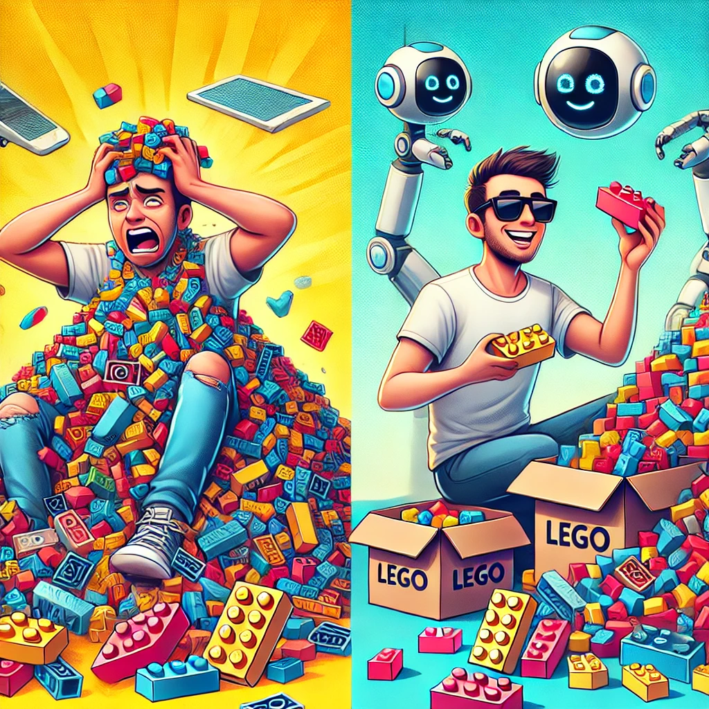

Why Learning to Program for Data Analytics is the Superpower You Didn’t Know You Needed
1. Why Did Data Analytics Come into the Picture?
Once upon a time, people made decisions based on gut feelings, experience, or just plain guessing. Then, as we started collecting more data—about what people buy, how diseases spread, even how much time we spend scrolling on our phones—businesses and scientists realized something: data could help predict the future! (Not like a crystal ball, but close.)
Take the movie Moneyball—instead of picking baseball players based on "vibes," the coach used data to analyze performance and build a winning team. That's what data analytics does: it turns raw information into gold.
2. Why Should You Learn Programming for Data Analytics?
Imagine you have a giant pile of LEGO bricks (your data). You can either:
Manually go through them one by one, searching for specific colors (slow, painful, and possibly soul-crushing), OR
Write a program that sorts and categorizes them in seconds (fast, fun, and cool!)

Programming helps you:
Automate boring stuff(Why spend hours on something a script can do in minutes?)
Find patterns humans can’t see(Did you know Netflix suggests movies based on data analytics?)
Make smarter decisions(Companies save millions by analyzing customer behavior.)
Predict the future(Weather forecasting, disease spread, even the next viral TikTok trend!)
You can analyze patterns, track what’s hot right now, and create a TikTok video so on-point that it’ll feel like you have a cheat code to virality. Who needs luck when you have analytics? And the best part? You can predict whatever you're interested in and watch the magic happen! - Included mini experiment in step 7
3. How Much Programming Do You Need to Know?
Not everyone needs to become a hardcore software engineer. Here's the breakdown:
Beginner: Basics of Python or R (think of it as learning to use a kitchen knife—essential but not overwhelming).
Intermediate: Data manipulation, visualization, and simple machine learning.
Advanced: Building AI models and automation (think of it as cooking a five-star meal instead of just making toast).
4. Pros and Cons of Learning Programming for Data Analytics
Pros:
High-paying job opportunities üí∞
Work in any field (sports, healthcare, environment, gaming, even space exploration!) üåç
Save time with automation ⏳
Impress people at parties ("I analyzed your Spotify playlist, and I know your mood!") üéµ
Cons:
It can be frustrating at first (like learning to ride a bike but with more error messages). üö¥‚Äç‚ôÇÔ∏èüí•
Too much screen time üñ•Ô∏è
Can make you question reality ("Wait, are all my online choices driven by algorithms?") ü§Ø
5. Will Data Analytics Be Replaced by Something Else?
Nope, but it will evolve! Long answer: AI will make data analytics faster and more powerful, but it still needs humans to interpret results, ask the right questions, and apply ethics. Data analytics is like Batman's detective skills—no matter how advanced the Batcomputer gets, you still need Batman.
6. How Data Analytics Helps Solve Global Problems
üåæ Food: Predicting crop failures and improving food supply chains (No more surprise onion price hikes!)
üíß Water: Finding leaks in water pipelines and improving access in drought-prone areas.
üåç Planet Survival: Tracking climate change and deforestation, helping us act before it's too late.
üëµ Human Lifespan: Predicting diseases early and personalizing healthcare.
üêÖ Non-Human Species: Protecting endangered animals by tracking poaching patterns.
7. Predicting the Next Viral TikTok Trend with Data Analytics
Ever wonder how some TikTok videos blow up while others get ignored? Platforms analyze watch time, likes, shares, and comments to predict which content will go viral.
For example, let's say a video has:
High watch time (people don't skip it)
Tons of likes and shares in the first hour
Lots of comments (engagement means relevance!)
That video is likely to be pushed to more users, increasing its chances of going viral.
Mini Experiment: Predicting Viral Content Using Python
Want to test this yourself? Here's a simple Python model that predicts if a TikTok video will go viral based on engagement metrics:
import pandas as pd
import numpy as np
from sklearn.model_selection import train_test_split
from sklearn.preprocessing import StandardScaler
from sklearn.linear_model import LogisticRegression
from sklearn.metrics import accuracy_score
# Sample Data (likes, comments, shares, and watch time)
data = {
"likes": [100, 25000, 5000, 40000, 700, 18000, 22000, 300],
"comments": [10, 500, 200, 700, 20, 450, 600, 15],
"shares": [5, 300, 120, 450, 8, 250, 320, 10],
"watch_time": [30, 120, 60, 180, 25, 100, 150, 20], # Seconds watched
"viral": [0, 1, 0, 1, 0, 1, 1, 0] # 1 = Viral, 0 = Not Viral
}
df = pd.DataFrame(data)
# Features & Target
X = df.drop(columns=["viral"])
y = df["viral"]
# Data Preprocessing
scaler = StandardScaler()
X_scaled = scaler.fit_transform(X)
# Train-Test Split
X_train, X_test, y_train, y_test = train_test_split(X_scaled, y, test_size=0.2, random_state=42)
# Model Training
model = LogisticRegression()
model.fit(X_train, y_train)
# Predictions
y_pred = model.predict(X_test)
# Accuracy
accuracy = accuracy_score(y_test, y_pred)
print(f"Model Accuracy: {accuracy:.2f}")
# Example: Predicting a new video
new_video = np.array([[15000, 400, 200, 90]]) # Likes, Comments, Shares, Watch Time
new_video_scaled = scaler.transform(new_video)
prediction = model.predict(new_video_scaled)
print("Will the video go viral?", "Yes" if prediction[0] == 1 else "No")
Final Thought
Learning to program for data analytics is like getting a superpower—it won't just make you valuable in the job market, it can also help solve real-world problems. And if nothing else, it's a great way to impress your friends with cool data insights ("Did you know people spend 5 years of their life eating?!").
So, ready to become a data superhero? ü¶∏‚Äç‚ôÇÔ∏èüìä